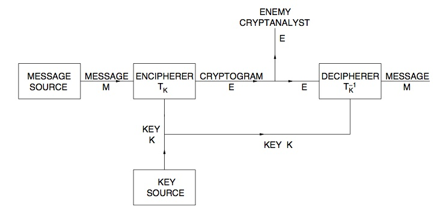

Lecture 2
Outline
- Positioning of security services in network
- General model of an encryption system
- The guessing attack to an encryption system
- Perfect secrecy
Positioning of security services in network
The allocation of security services to network layers is described in ITU-T Recommendation X.800 and it’s based on the following principles:
- the number of alternative ways of achieving a service should be minimized
- it is acceptable to build secure systems by providing security services in more than one layer
- additional functionality required for security should not unnecessarily duplicate the existing OSI functions
- violation of layer independence should be avoided
- the amount of trusted functionality should be minimized wherever an entity is dependent on a security mechanism provided by an entity in a lower layer, any intermediate layers should be constructed in such a way that security violation is impracticable
-
the Recommendation is assumed to apply to open systems consisting of end systems containing all seven layers and to relay systems
- Physical layer
- Available Services
- Connection Confidentiality
- Traffic Flow Confidentiality
- Full
- Limited
These services are restricted to passive threats and are applicable to point-to-point or multi-peer communications.
- Available Mechanisms
- Total encipherment
- Transmission security (specific form of encipherment applicable to physical layer only)
- Available Services
- Data link layer
- Available Services
- Connection Confidentiality
- Connectionless Confidentiality
- Available Mechanisms
- Encipherment
- Available Services
- Network layer
- Available Services
May be provided by the protocol that performs sub-network access functions or by the protocol that performs relaying and routing- Peer Entity Authentication
- Data Origin Authentication
- Access Control service
- Connection Confidentiality
- Connectionless Confidentiality
- Traffic Flow Confidentiality
- Connection Integrity without recovery
- Connectionless Integrity
These services may be provided alone or in combination.
- Available Mechanisms
- Peer Entity Authentication: appropriate combination of cryptographically-derived or protected authentication exchanges, protected password exchange and signature mechanisms
- Data Origin Authentication: encipherment or signature mechs
- Access Control service: appropriate use of specific access control mechs
- Connection Confidentiality: encipherment and/or routing control
- Connectionless Confidentiality: encipherment and/or routing control
- Traffic Flow Confidentiality: traffic padding mech, in conjunction with a confidentiality service at or below the network layer and/or routing protocol
- Connection Integrity without recovery: data integrity mechanism, sometimes in conjunction with an encipherment mechanism
- Connectionless Integrity: same as above
- Available Services
- Transport layer
- Available Services
- Peer Entity Authentication
- Data Origin Authentication
- Access Control service
- Connection Confidentiality
- Connectionless Confidentiality
- Connection Integrity with recovery
- Connection Integrity without recovery
- Connectionless Integrity
These services may be provided alone or in combination.
- Available Mechanisms
- Peer Entity Authentication: appropriate combination of cryptographically-derived or protected authentication exchanges, protected password exchange and signature mechanisms
- Data Origin Authentication: encipherment or signature mechs
- Access Control service: appropriate use of specific access control mechs
- Connection Confidentiality: encipherment
- Connectionless Confidentiality: encipherment
- Connection Integrity with recovery: data integrity mechanism, sometimes in conjunction with an encipherment mechanism
- Connection Integrity without recovery: same as above
- Connectionless Integrity: same as above
These mechanisms will operate in such a manner that individual transport connections can be isolated from each other
- Available Services
- Session layer
- Available Services: No security services provided
- Presentation layer
- Available Services
- Connection Confidentiality
- Connectionless Confidentiality
- Selective Field Confidentiality
Also, the following services may be supported: - Traffic Flow Confidentiality
- Peer Entity Authentication
- Data Origin Authentication
- Connection Integrity with Recovery
- Connection Integrity without Recovery
- Selective Field Connection Integrity
- Connectionless Integrity
- Selective Field Connectionless Integrity
- Non-repudiation with Proof or Origin
- Non-repudiation with Proof of Delivery
- Available Mechanisms
- Peer Entity Authentication: encipherment
- Data Origin Authentication: encipherment or signature
- Connection Confidentiality: encipherment
- Connectionless Confidentiality: encipherment
- Selective Field Confidentiality: encipherment
- Traffic Flow Confidentiality: encipherment
- Connection Integrity wirth Recovery Service: data integrity, sometimes in conjunction with encipherment
- Selective Field Connection Integrity: data integrity, sometimes in conjunction with encipherment
- Connectionless Integrity: data integrity, sometimes in conjunction with encipherment
- Selective Field Connectionless Integrity: data integrity, sometimes in conjunction with encipherment
- Non-repudiation with proof of origin: combination of data integrity, signature and notarization
- Non-repudiation with proof of delivery: combination of data integrity,
signature and notarization
Encipherment mechanisms, when located in the upper layers, will be contained in the presentation layer; some of the security services in the list above can alternatively be provided by mechanisms contained fully in the application layer.
- Available Services
- Application layer
- Available Services
- Peer Entity Authentication
- Data Origin Authentication
- Access Control Service
- Connection Confidentiality
- Connectionless Confidentiality
- Selective Field Confidentiality
- Traffic Flow Confidentiality
- Connection Integrity with Recovery
- Connection Integrity without Recovery
- Selective Field Connection Integrity
- Connectionless Integrity
- Selective Field Connectionless Integrity
- Non-repudiation with Proof of Origin
- Non-repudiation with Proof of Delivery
- Available Mechanisms
- Peer Entity Authentication: auth info transferred between application entities, protected by lower layer encipherment
- Data Origin Authentication: signature or loewr layer mechs
- Access Control Service: combination of access control mechs in the application or lower layers
- Connection Confidentiality: lower layer encipherment
- Connectionless Confidentiality: lower layer encipherment
- Selective Field Confidentiality: encipherment at presentation layer
- Traffic Flow Confidentiality: traffic padding, plus confidentiality at a lower level
- Connection Integrity with Recovery: lower layer data integrity
- Connection Integrity without Recovery: lower layer data integrity
- Selective Field Connection Integrity: data integrity
- Connectionless Integrity: lower layer data integrity
- Selective Field Connectionless Integrity: data integrity
- Non-repudiation with Proof of Origin: combination of signature and lower layer data integrity (possibly in conjunction with 3rd party notaries)
- Non-repudiation with Proof of Delivery: combination of signature and lower layer data integrity (possibly in conjunction with 3rd party notaries)
- Available Services
General model of an encryption system
As described by Shannon, a general secrecy system is composed by two
information sources: a message source and a key source.
The key source “picks” a key among a set of possibile keys ;
the key is then transmitted to the receiving end by some means, supposedly
not interceptible.
The message source produces a message which is then enciphered using
the key , producing a cryptogram .
The cryptogram is then sent to the receiving end by a possibly interceptible
means; the receiving end combines the cryptogram and key in a
decipherer block that recovers the original message .

The encipherer can be described as a family of transformations ,
so that:
$$
E = T_im
$$
Note that the index corresponds to the particular key being used.
Shannon makes the assumption that only a finite number of possible keys exists,
and that each one has an associated probability . This way, the key
source is represented as a statistical process which chooses one from the set
of transformations with probabilities
.
At the same time, he assumes a finite number of possible messages $$
m1,m2,…,m_n $$ with associated a priori probabilities
.
With this model, to decipher the message, each transformation must
have a unique inverse (such that ). This way,
we can associate the decipherer to the inverse transformation, so that:
$$
M = T^{-1}ie
$$
So, we arrive at the following definition:
> A secrecy system is a family of uniquely reversible transformations
> of a set of possible messages into a set of cryptograms, the
> transformation having an associated probability .
The set of possible messages will be called the _message space, while the set
of possible cryptograms will be called cryptogram space.